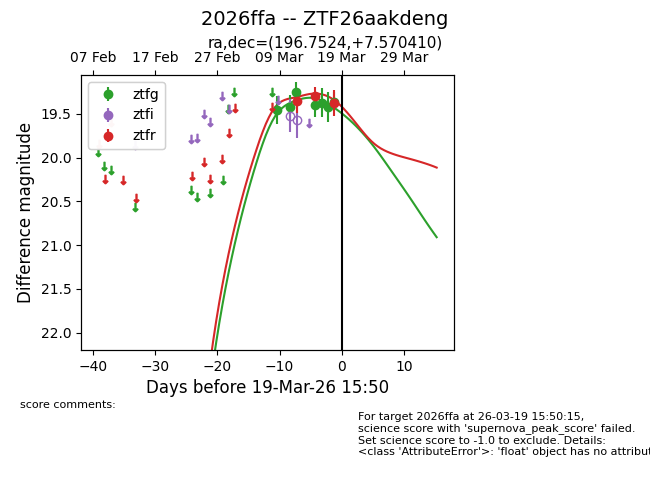
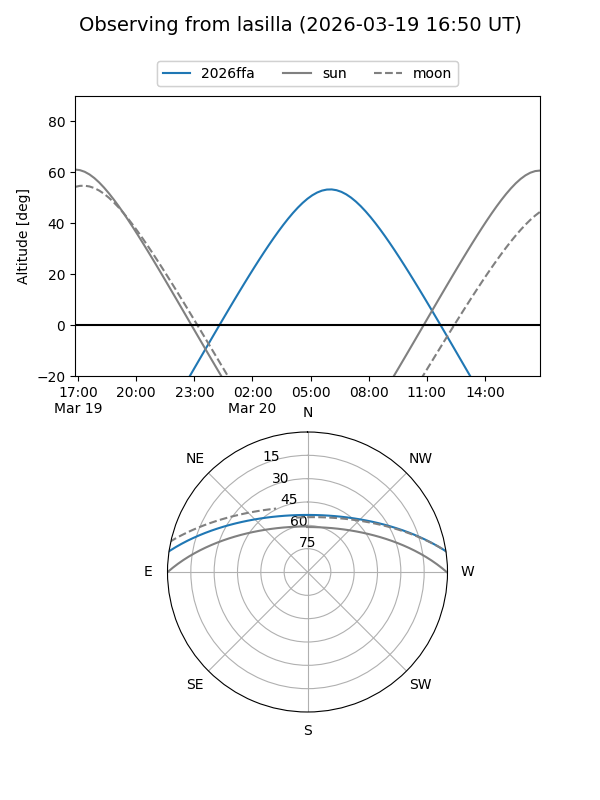
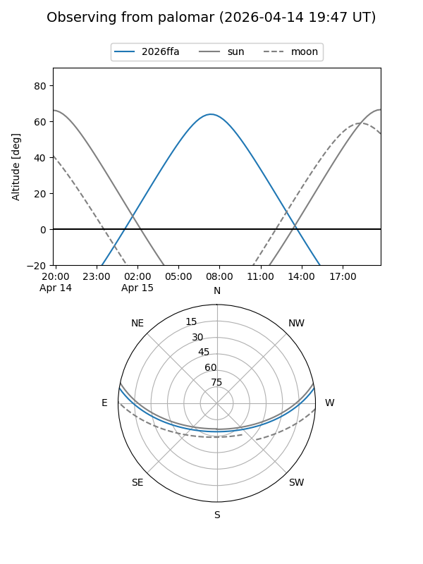
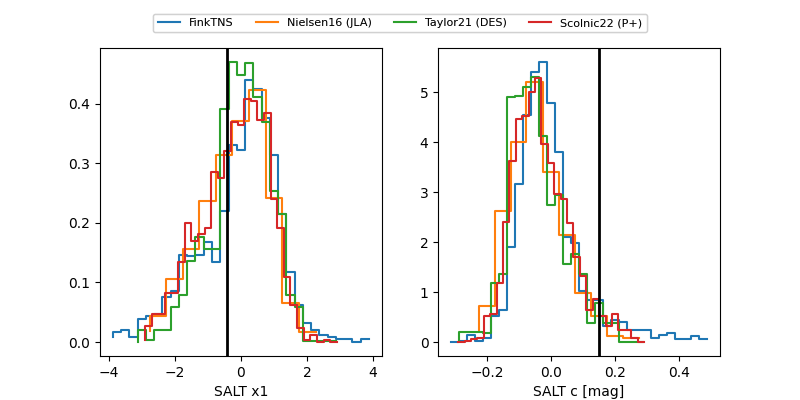

2026ffa
Target 2026ffa at 2026-03-19 15:52
Aliases and brokers:
FINK: link
Lasair: link
ALeRCE: link
TNS: link
YSE: link
alt names
ZTF26aakdeng (ztf,fink_ztf)
2026ffa (tns,yse)
Coordinates:
equatorial (ra, dec) = 196.7524,+7.57041
equatorial (HMS+DMS) = 13:07:00.57,+07:34:13.47
galactic (l, b) = (314.3338,+70.09668)
Flags:
Photometry:
last ztfg=19.36, ztfr=19.38
7 ztfg, 3 ztfr detections
Lightcurve

Visibility


Additional plots
